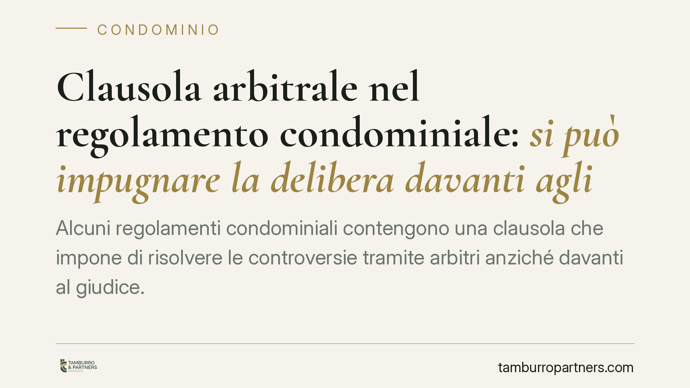

Clausola arbitrale nel regolamento condominiale: si può impugnare la delibera davanti agli arbitri?
Alcuni regolamenti condominiali contengono una clausola che impone di risolvere le controversie tramite arbitri anziché davanti al giudice. Capire se e quando tale clausola vincola i condomini, anche per impugnare le delibere assembleari, incide direttamente su termini, costi e strategia processuale. Il tema è dibattuto e la distinzione tra tipi di regolamento è decisiva.

Il caso e perché conta
Capita di scoprire, leggendo il regolamento condominiale, una cosiddetta clausola compromissoria: una previsione che impone di devolvere le liti tra condomini, o tra condomini e condominio, a un collegio arbitrale invece che al giudice ordinario. La domanda ricorrente è se tale clausola possa obbligare a impugnare le delibere assembleari davanti agli arbitri, escludendo la via giudiziale.
La questione è tutt'altro che teorica. Dalla risposta dipendono i termini da rispettare, i costi del procedimento e persino la possibilità di far valere i propri diritti. Anticipiamo che non esiste una risposta unica: molto dipende dalla natura del regolamento e dalle modalità con cui la clausola è stata approvata.
Inquadramento normativo
L'impugnazione delle delibere assembleari è disciplinata dall'art. 1137 cod. civ., che fissa in trenta giorni il termine per i condomini assenti, dissenzienti o astenuti. Si tratta di un termine di decadenza: decorso inutilmente, la delibera annullabile diventa definitiva.
Occorre però distinguere tra due tipologie di regolamento. Il regolamento assembleare, approvato a maggioranza, disciplina l'uso delle parti comuni e la ripartizione delle spese. Il regolamento di natura contrattuale - predisposto dall'originario costruttore e accettato nei singoli atti d'acquisto, oppure approvato all'unanimità - può incidere anche sui diritti individuali dei condomini.
Su questa distinzione si gioca la validità della clausola arbitrale. Secondo l'orientamento prevalente, una clausola compromissoria incide su un diritto fondamentale: la facoltà di adire il giudice naturale. Per essere opponibile al singolo condomino, essa richiede di norma un consenso specifico, non la semplice approvazione a maggioranza. Vengono in rilievo anche i principi in materia di clausole vessatorie (art. 1341 cod. civ.) e la disciplina dell'arbitrato (artt. 806 e seguenti cod. proc. civ.). Il tema resta oggetto di dibattito e non va dato per pacifico che ogni clausola vincoli automaticamente tutti i condomini, né i successivi acquirenti.
Nullità e annullabilità: una premessa necessaria
Un ulteriore livello di prudenza riguarda il tipo di vizio. Le Sezioni Unite della Cassazione (sent. n. 9839/2021) hanno ridisegnato il confine tra delibere nulle (impugnabili senza limiti di tempo da chiunque vi abbia interesse) e delibere annullabili (soggette al termine di trenta giorni). La disciplina della clausola arbitrale e dei relativi termini può atteggiarsi diversamente a seconda che si contesti una nullità o una mera annullabilità. È un profilo da verificare caso per caso prima di impostare qualsiasi azione.
Implicazioni pratiche
Se la clausola arbitrale è valida e opponibile, e un condomino cita ugualmente il condominio davanti al Tribunale, la controparte può sollevare l'eccezione di patto compromissorio (art. 817 cod. proc. civ.). L'effetto, si badi, non è una questione di *competenza* del giudice, ma di improponibilità della domanda: il giudice ordinario non può decidere nel merito perché le parti hanno scelto la via arbitrale.
Attenzione poi ai termini. Per rispettare la decadenza dei trenta giorni ex art. 1137 cod. civ. non basta attendere: occorre proporre tempestivamente la domanda di arbitrato, con l'atto introduttivo idoneo secondo la clausola e le norme applicabili. È la domanda di arbitrato, non un generico reclamo, ad avere effetto impeditivo della decadenza.
Per chi acquista un immobile, il profilo più delicato è l'opponibilità. Prima di firmare conviene leggere il regolamento allegato, verificarne la natura e la trascrizione, e valutare se contenga clausole arbitrali che potrebbero vincolare anche il nuovo proprietario.
Cosa fare in concreto
- Leggete il regolamento prima di impugnare qualsiasi delibera: individuate l'eventuale clausola arbitrale e la sua esatta formulazione.
- Verificate la natura del regolamento (contrattuale o assembleare) e le modalità di approvazione della clausola, per valutarne l'opponibilità al singolo condomino.
- Qualificate il vizio della delibera (nullità o annullabilità): ne dipendono i termini e la stessa impugnabilità.
- Rispettate i trenta giorni proponendo tempestivamente la domanda di arbitrato, se la via arbitrale è quella dovuta.
- In fase di acquisto, chiedete copia del regolamento e fate valutare la presenza di clausole arbitrali prima del rogito.
---
Contributo informativo a cura di Tamburro & Partners - Avv. Giuseppe Tamburro. Non costituisce parere legale.
Ogni condominio ha una storia a sé.
Se gestisci un'amministrazione e vuoi un confronto su una specifica questione condominiale, scrivi allo studio. Ti rispondiamo entro un giorno lavorativo.